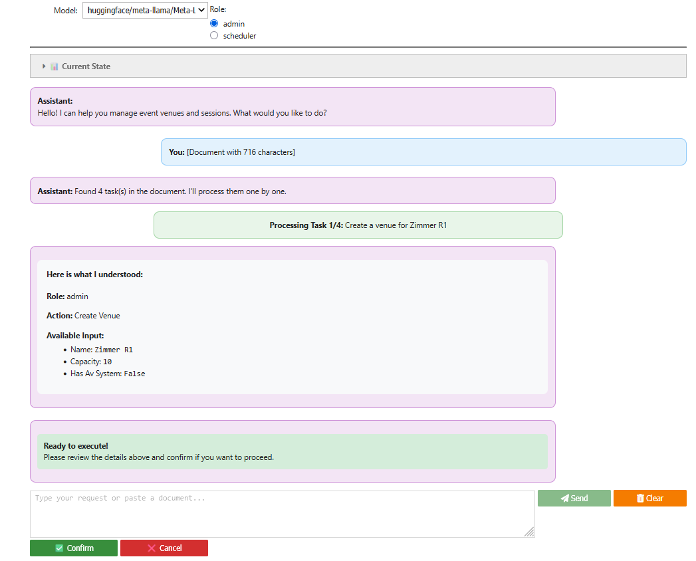
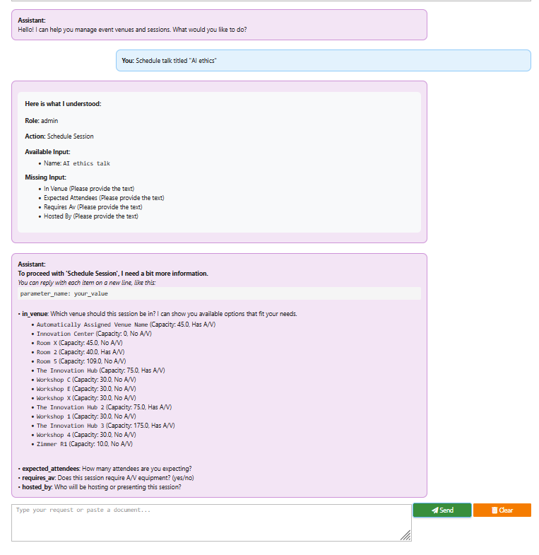
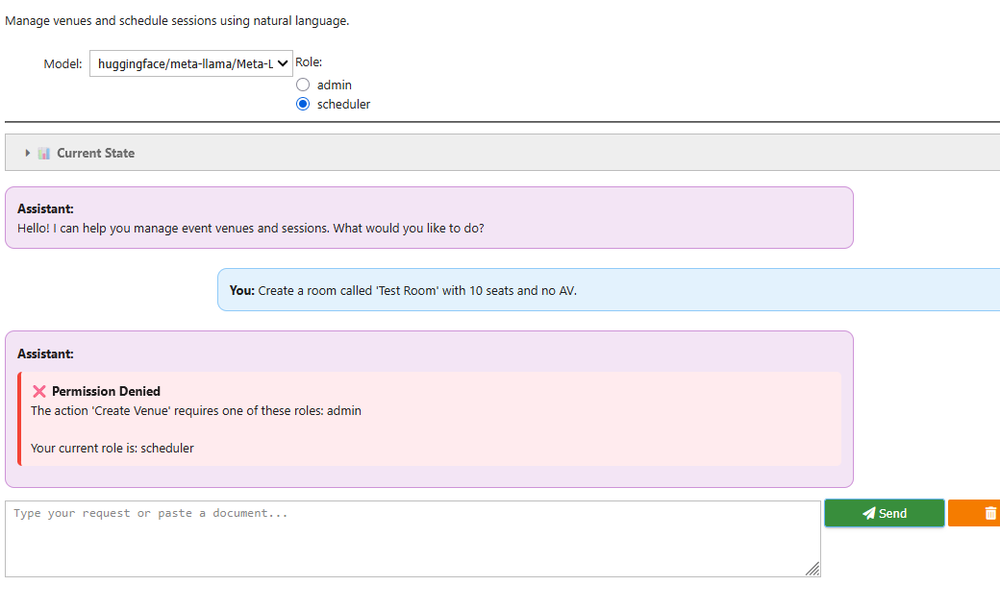
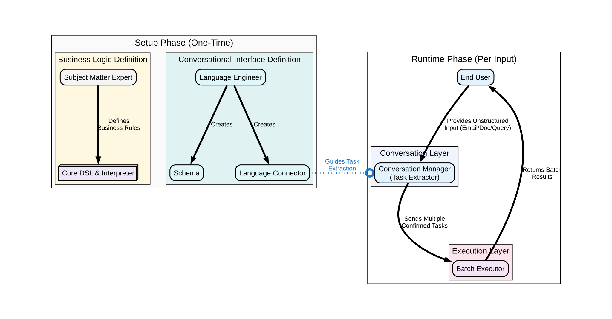
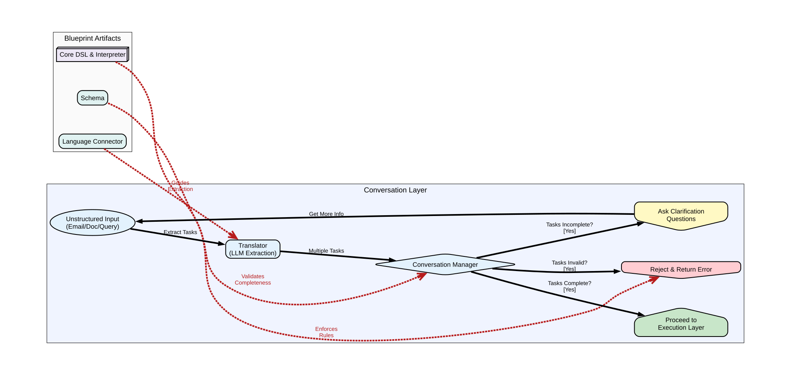

A Framework for Reliable, LLM-Powered Interfaces
Krishna Nadiminti
F1RE
LangDev 2025
Let's make formal languages accessible to everyone!
✓ Domain-Specific Languages provide:
• Correctness guarantees
• Safety validation
• Formal verification
• Precise semantics
✗ BUT: They require specialized knowledge!
New users face a steep learning curve.
This limits adoption and creates friction.
LLMs already claim to understand code...
"Generate SQL for top customers" "Write Python to analyze this data" "Create a regex for email validation"
But can we trust them with critical business logic?
What if we could combine LLM accessibility
with DSL reliability?
✓ Precise & Unambiguous ✓ Verifiably Correct ✓ Source of Truth for Business Logic ⚠ Barrier to Entry: Requires learning a specific syntax
✓ Intuitive & Conversational ✓ Flexible Natural Language Input ✓ Accessible to Everyone ⚠ Barrier to Trust: Probabilistic and cannot guarantee correctness
We enhance existing, reliable DSLs with a natural language interface.
The DSL remains the source of truth; the LLM acts only as a translator.
The framework is built on a set of formal artifacts that govern the system's behavior.
The system can parse complex, real-world text and extract multiple, distinct DSL tasks.

When a query is incomplete, the system uses the Schema to ask precise, helpful questions.

The Core DSL & Interpreter act as the final gatekeeper, preventing invalid operations.

Adding a new DSL is primarily a configuration task, not a complex coding one.
Our system can extract multiple structured tasks from unstructured input:
"Hi Team, I wanted to let you know that we've secured a new venue with four rooms: Zimmer X1 – 10 seats, no AV facilities Zimmer X2 – 40 seats, fully equipped with AV Zimmer X3 – 20 seats, AV available Zimmer X4 – 60 seats, AV and stage setup This gives us a lot more flexibility for planning events... Best, Sarah"
System extracts 4 tasks:
1. create_venue "Zimmer X1" {
capacity: 10, av: false }
2. create_venue "Zimmer X2" {
capacity: 40, av: true }
3. create_venue "Zimmer X3" {
capacity: 20, av: true }
4. create_venue "Zimmer X4" {
capacity: 60, av: true,
stage: true }
Each extracted instruction goes through the same validation and execution pipeline!
From unstructured input to validated execution
Unstructured Input: Email, document, or conversation 1. Conversation Layer: • Extracts ALL actionable tasks from input • Structures each task independently • Confirms batch with user if needed 2. Execution Layer (per task): • Converts each to formal DSL • Validates against business rules • Executes approved actions only

Zoom in with Ctrl/Cmd + mouse wheel if needed to read diagram details

Zoom in with Ctrl/Cmd + mouse wheel if needed to read diagram details
Unstructured Input: "Set up the new conference room with 50 seats and schedule a talk there." System Extracts: Task 1: create_venue [missing name] ❓ Task 2: schedule_talk [missing details] ❓ Conversation Manager: "I found 2 tasks. I need more info: • What's the room name? • Talk title, speaker, and time?"
From our email example: ✅ Tasks 1-3: Valid → Execute ❌ Task 4: User lacks permission System Response: "Successfully created: • Zimmer X1 (10 seats) • Zimmer X2 (40 seats, AV) • Zimmer X3 (20 seats, AV) ⚠ Cannot create Zimmer X4: Venues >50 seats require admin role"
This approach allows us to leverage the curated knowledge and reliability of DSLs while providing the accessibility of a modern, natural language interface.